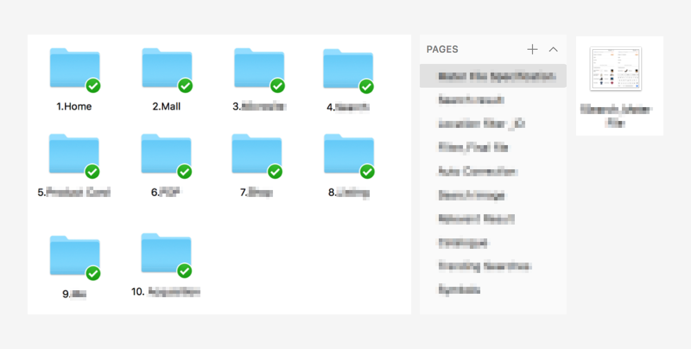

Design Language System
Design language system is no longer a new conception in a mature company, it’s a complex system. With the trend of internet flourish in South East Asia, a better and consistent user experience becomes extremely important for both users can company.
My Rule: Interaction Designer, Product manager
Design Guideline
Resource Management
Work Efficiency
Knowledge Sharing
Execution
The goal we set for the DLS was to create a more beautiful and accessible design language. Our designs should be unified platforms that drive greater efficiency through well-defined and reusable components. In order to focus our efforts, we reduced the initial scope to creating the system first on components, design resource.
We started by auditing and printing out many of our designs, both old and new. Laying the flows side by side on a board, we could see where and how the experiences were breaking and where we needed to start making changes. We figured that the best way to begin was by tackling issues head on.
Unified
Each piece is part of a greater whole and should contribute positively to the system at scale. There should be no isolated features or outliers.
Iconic
We’re focused when it comes to both design and functionality. Our work should speak boldly and clearly to this focus.
Tools
Standardize the tools different teams use in different phases of the project. Right from the discovery of the project through the design, development and validation phases. Make sure everyone is aware of the tools other teams use. Tools used for collaboration should be easily accessible and agreed upon by everyone in every team.
Folder System
Create a folder system to organize work. Standardize the naming convention. This will make it easier to find a particular file. Find a formula that works best for all the teams, perfect a naming convention and STICK TO IT.
Documentation
Document all these standardizations. Create a one stop shop for every information related to the system followed.
Style Guide
Conduct a UI Audit (If working on an already existing platform). This is essentially making an inventory of all the components that make up the digital product. All we have to do is take screenshots of all the elements and components that make up your product and categorize them. The components range from right, from the text to buttons and accordion to tabs.
Foundation
We had already created a basic style guide, that we called the foundation. This foundation loosely defined our typography, colors, icons, spacing and information architecture. The foundation proved essential for guiding our work in a unified direction while allowing room for us to individually explore creative design solutions. This way we felt that we were all working together, towards the same idea. Reviewing our collective work at the end of each new feature, we began to see patterns emerge. We course-corrected when necessary, and started defining our standardized components.
Brand
A DLS creates a personality for a digital product. A personality that has its own character and other quirks which gives it its own identity and allows it to be recognized in this over populated world of digital products.
Result
Since the design language are often shared, we can now build and release features on all native platforms at roughly the same time. Development is generally faster, since product engineers can focus more on writing the feature logic rather than the view code. Additionally, engineers and designers now share a common language.
Lessons Learned
We knew that this was a challenging project. It meant re-designing and rebuilding the majority of the views in our app. We managed to make our goal of creating the system. As with any project, there are things we wish we would have done differently.

Not all components are created equal.
In most apps there are a set of components that repeat often. For us, these components are still some little different hard to define. Looking back, I wish we had taken more time to think about the marketing purpose or business purpose and come up with a stronger set of patterns and components. In the end, we wound up with many different kinds with some inconsistencies.
Sketch
We initially tried to create these components as symbols in Sketch, which resulted in a mess. Even now, our Sketch files are sometimes challenging to maintain. Moving forward, we hope to find better ways of maintaining and creating new components.
Inspection
Due to there are too many guidelines, styles, and images, sometimes we are not sure current project belong to part of DLS, or special case. It make people confused and complex. We think there should have some tools to help check.
Work Efficiency
In the other hand, we realize some of the repeat works could solve by automation tool, like the banners of marketing daily work, designers usually have to resize lots of banners to upload many different advertisement platforms. We are building the auto-layout to help they work efficiency.